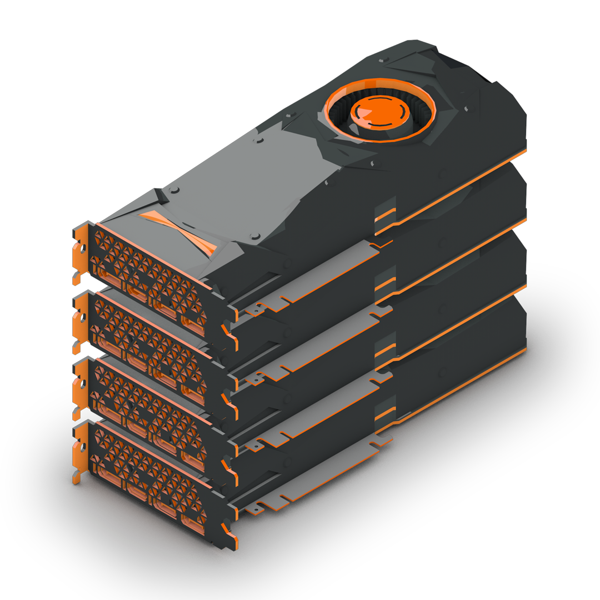

|
|
| FORM PEMBELIAN KOMPUTER DISINI!! |
Graphics Processing Unit
|
GPU atau Graphics Processing Unit adalah komponen kunci dalam sistem komputer yang bertanggung jawab untuk memproses dan merender grafik. Berbeda dengan CPU (Central Processing Unit) yang dirancang untuk menangani berbagai jenis tugas komputasi umum, GPU memiliki arsitektur yang dioptimalkan khusus untuk menangani operasi paralel dalam jumlah besar. Ini memungkinkan GPU untuk memproses ribuan operasi secara simultan, yang sangat penting untuk rendering gambar yang kompleks, animasi, dan visual efek dalam game serta aplikasi grafis lainnya. Selain untuk grafik, GPU juga memainkan peran penting dalam komputasi paralel di luar visualisasi. Dalam beberapa tahun terakhir, GPU telah digunakan secara luas dalam bidang seperti pembelajaran mesin, analisis data besar, dan penelitian ilmiah. Kemampuan GPU untuk menjalankan banyak thread secara bersamaan memungkinkan pengolahan data dalam jumlah besar dengan efisiensi tinggi, menjadikannya alat yang sangat berharga untuk tugas-tugas yang memerlukan pemrosesan paralel intensif. Ini telah mendorong kemajuan dalam berbagai aplikasi, dari AI hingga simulasi ilmiah. Perkembangan teknologi GPU terus berlanjut, dengan inovasi terbaru termasuk arsitektur yang lebih canggih dan integrasi teknologi ray tracing yang memungkinkan rendering grafik yang lebih realistis. GPU modern juga dilengkapi dengan memori video (VRAM) yang besar untuk menyimpan data grafis yang diperlukan, serta dukungan untuk berbagai API (Application Programming Interface) yang memudahkan pengembang dalam menciptakan aplikasi grafis yang lebih kompleks. Kemajuan ini membantu meningkatkan pengalaman pengguna dalam berbagai aplikasi, dari game video hingga aplikasi profesional yang memerlukan visualisasi data yang mendetail. |
 |